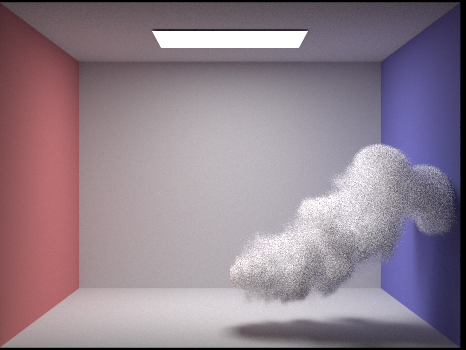

Abstract
For this project we tried rendering realistic smoke and clouds (heterogeneous participating media). In project 3, we treated the empty space as a vacuum, which made incoming radiance relatively easy to calculate, since a light ray's photons are not affected by the space it travels through. In participating media, we treat the media as a collection of particles that the light ray interacts with as it travels through, causing absorption or scattering effects, and thus a change in radiance. Since it would be inefficient to find photon interactions with individual particles, absorption or scattering is calculated probabilistically.
Technical Approach
Our algorithm mostly follows the one detailed in the Physically Based Rendering Textbook, but with a few modifications. To render the media with scattering, we sample the distance the light ray travels in the media, sample direct lighting at that distance, and choose the next direction to travel using a phase function. We modified the class pathtracer from Project 3 to check if a medium intersection exists, deal with scattering interactions, and then check for surface interactions.
We defined our heterogeneous medium by a grid of floats, representing local partical densities, for the bounding box that contains the medium. We found a few datasets online, one from the Physically Based Rendering Textbook and another from Mitsuba Renderer. We added the density grid to the Collada files from class projects, along with scattering and absorption coefficients, and edited collada.cpp to read the grid into a new Grid data structure we defined.
When we sample the medium, we first check if the ray intersects with the medium's bounding box, and if it does we sample the distance it travels before interacting with a particle. For distance sampling, we used Woodcock tracking, also known as delta tracking. Woodcock tracking is a way of sampling distances in heterogeneous media by treating it as if it's homogeneous, and is an accuracy and efficiency improvement over ray marching. In Woodcock tracking, we take multiple steps through the media and probabilistically choose to stop, which is proportional to the ratio of the local density at that location to maximum density throughout the medium. The algorithm is as follows:
function sample_distance(x, ω, σmax)
t = intersect(ray, bbox)
while true:
t -= ln(1 – rand()) / (σmax * extinction)
if (rand() < σt(x – tω) / σmax)
break
return t
where $\sigma_{max}$ is the maximum density throughout the medium and $\sigma_t (x - t \omega)$ is the density at time $t$ in the ray. If the local density is high, the algorithm is more likely to halt and return a shorter distance, and if it is low, the algorithm is more likely to return longer distances.
After sampling a distance, we get the direct lighting at that location with a modification to the same method estimate_direct_lighting(), used in project 3. We scale our sampled direct lighting by its transmittance through the media between the hit point and a light source (if it exists), which is the probability of passing through the medium. We calculate transmittance similarly to how we sample a distance:
function transmittance(t)
tr = 1
while true:
t -= ln(1 – rand()) / (σmax * extinction)
σt = grid(t)
tr *= 1 - max(0, σt/σmax)
return tr
Unlike when we render shadows for solid materials, we have to keep sampling the transmittance and scale the radiance by the sampled transmittance until the ray comes out of the participating media in order to get a nice shade on the cloud. To do so, we use the shadow ray and after each sample, we update the ray by offsetting the origin from the hit point by EPS_D, with direction towards the light point we sampled earlier.
We use the Henyey-Greenstein phase function to choose which direction to travel to next. This phase function takes in a parameter $-1 \leq g \leq 1$, that causes the phase to range from back-scattering to forward-scattering. The Henyey-Greenstein phase function is:
$p(\theta) = \frac{1}{4 \pi} \frac{1 - g^2}{ [1 + g^2 - 2 g \cos ( \theta ) ]^{3/2}}$
Using Woodcock tracking and the Henyey-Greenstein phase function, we can choose the next point to estimate lighting at and simulate multiple scattering. We keep sampling points in the medium until our distance and direction function give us a point outside of the medium, and then we can normally get surface radiance.
Problems Encountered
Our biggest problem was trying to get direct lighting to show for scattering effects. Our clouds were showing up very flat and it was hard knowing where to try to start debugging.
Lessons Learned
As with all the other CS 184 projects, it was hard debugging the project because nothing was broken - it was just that the images didn't look quite right. But while working on this project, we learned to go step by step to figure out why the images were coming out like they were. For example, in the beginning, we had very flat and almost white clouds. But after spending a lot of time re-reading the papers and the textbook, we realized our algorithm for transmittance was slightly wrong. We were only sampling transmittance once and returning the radiance immediately (like we would do wtih the shadow rays by returning Spectrum()) while we should have kept sampling transmittance while the ray was traversing through the cloud. This project really helped us understand more about ray tracing and how to logically go through the algorithms and the steps of a ray.
Results
Here are some of our renderings. Below are cloud renderings with absorption coefficient of 10, scattering coefficient of 90 and the same samples per pixel (s = 512) and light (l = 2) with different ray depths.
|

|
|
We also tried adding blue emission for the media.
|
|

|
More images!
|
|
|
Resources
- Physically Based Rendering Textbook
- Volumetric Rendering
- Light Transport in Participating Media
- Volumetric Path Tracing
Team Member Contributions
Solah: modified the pipeline to import the grid and coded the algorithms
Sarah: helped with coding the functions and debugging